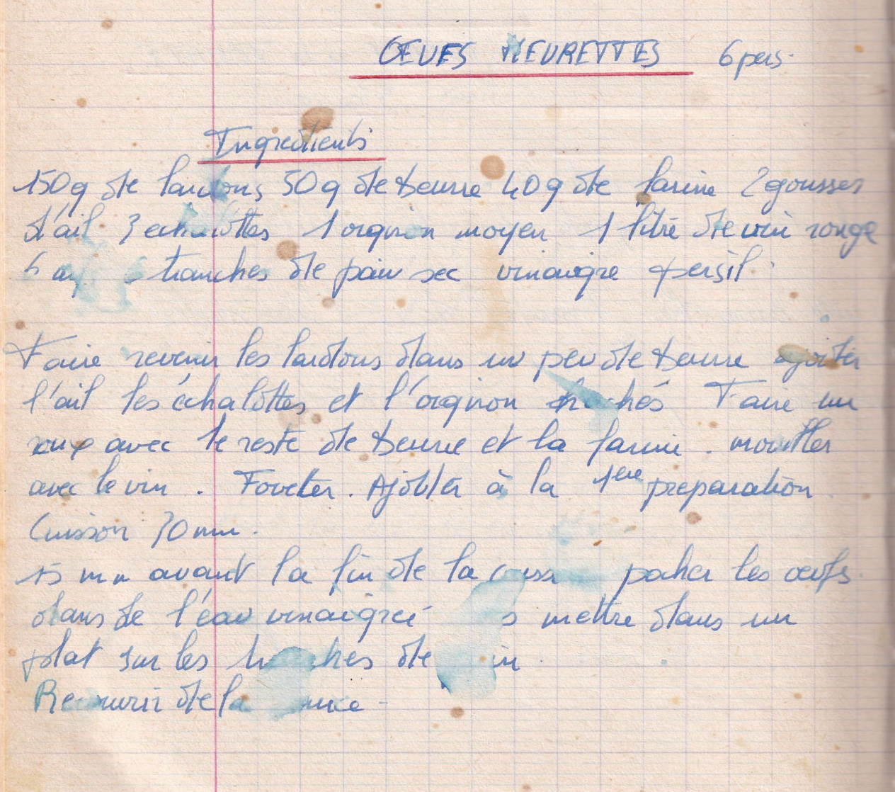

oeufs meurette

LISTE DES INGREDIENTS
- 150gr de lardons
- 50gr de beurre
- 40gr de farine
- 2 gousses d'ail
- 3 échalottes
- 1 oignon moyen
- 1 litre de vin rouge
- 6 oeufs
- 6 tranches de pain sec
- Vinaigre Persil
PREPARATION
- Faire revenir les lardons dans un peu de beurre
- Ajouter l'ail les échalottes et l'oignon hachés
- Faire un roux avec le reste de beurre et la farine
- Mouiller avec le vin
- Fouetter
- Ajouter à la première préparation
- Cuisson 30min je pense
- 15min avant la fin de cuisson, pocher les oeufs dans l'eau vinaigrée
- Puis mettre dans un plat sur les ranches de pain
- Recouvrir de la sauce